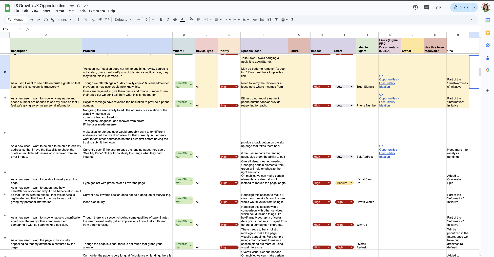
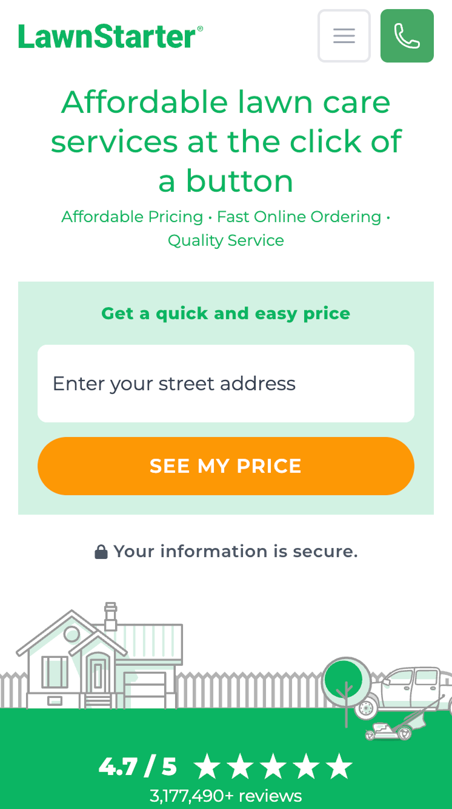
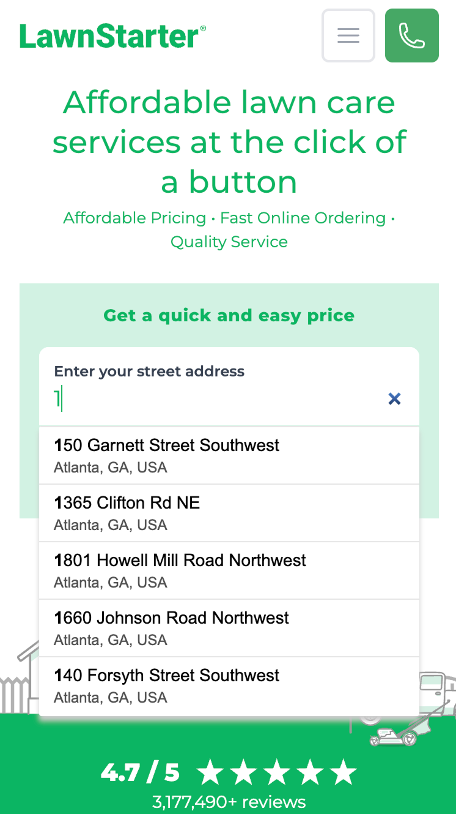
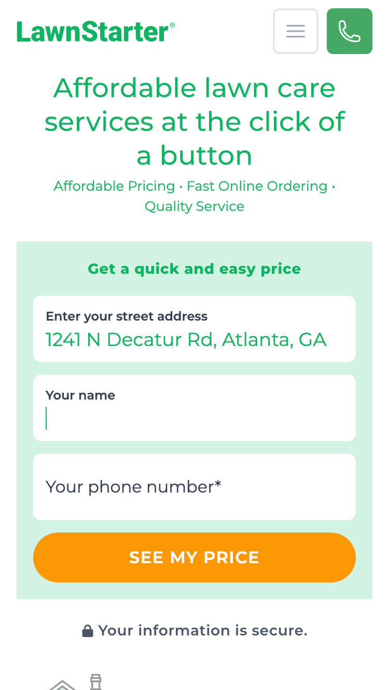
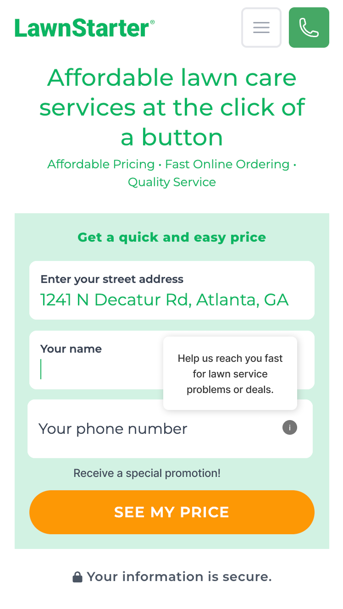

Prioritized UX opportunities identified across three brands. The core finding: the funnel was breaking promises the growth team didn't know it was making.
I joined as the first designer embedded in LawnStarter's Growth team — a function that included PMs, engineers, SEO, SEM, and content, but had never had a designer in the room. With no inherited design context, the first job was building the diagnostic methodology from scratch: walk the products as a real user, map every friction point, and validate the highest-priority findings with behavioral data before deciding what to act on.
The full audit surfaced 44 UX opportunities across three brands, scored and prioritized by effort and impact. These four illustrate the range — from quick systemic logic fixes to longer-term architectural changes — and the level of specificity each finding carried.
"Every paid click carried a $19 offer. Clicking the company logo silently stripped it. Marketing had no idea."
Clicking the company logo on an SEM page navigated users out of their promotional context, silently removing the $19 offer they'd arrived to claim. Marketing was spending on clicks the product's own navigation was converting to zero-dollar sessions.
Lock navigation on SEM landing pages. A product-layer fix — not a campaign adjustment — that directly protected every dollar Marketing was spending on paid acquisition.
Guarantees and bonded & insured status — the signals that matter to a first-time user — weren't visible at the point of decision on mobile. Meanwhile, "As Seen In..." sections with no verifiable source links were actively undermining credibility.
Move guarantees and bonded & insured status to the point of decision. Remove unverifiable "As Seen In" claims. Credibility is as much about what you're willing to cut as what you add.
Hotjar recordings showed consistent hesitation at the phone number field: pause, re-read, abandon. Users clicked "See My Price" expecting a price — they got an identity form with no explanation of why.
Two-speed fix: immediately, add inline context explaining why the phone number is needed. Over time, re-sequence the funnel so users receive a price estimate before being asked to give personal information.
After entering an address, there was no way to go back or correct a typo. Users with new builds couldn't proceed at all — the database couldn't match their address, and there was no fallback. Two different users, same outcome: no way forward.
Add a back button and address edit path for all users. For unrecognized addresses, design a freeform fallback modal — a recovery path for high-intent users the system couldn't recognize.
By the final month I was transitioning off. I made the handoff the deliverable — 44 UX opportunities structured into a prioritized roadmap, plus directional design for the highest-priority flows to give the team a starting point. Two types of artifacts: strategic direction and design execution.


Landing page promises a quick price — just enter your address and click.

Address autocomplete appears. Still no indication of what comes next.

Address selected — name and phone required. No explanation. No opt-out.

One example of the design direction included in the handoff. A tooltip explains the ask: "Help us reach you fast for lawn service problems or deals." Incentive copy below gives users a reason to comply rather than a reason to leave.
The gate doesn't disappear. The demand becomes a value exchange.